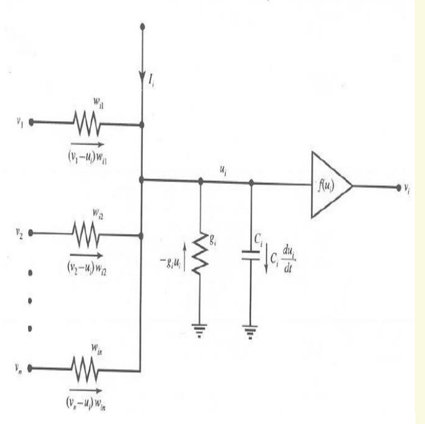
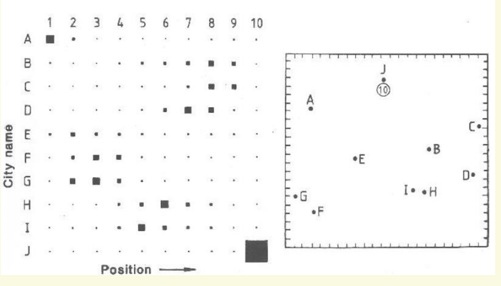
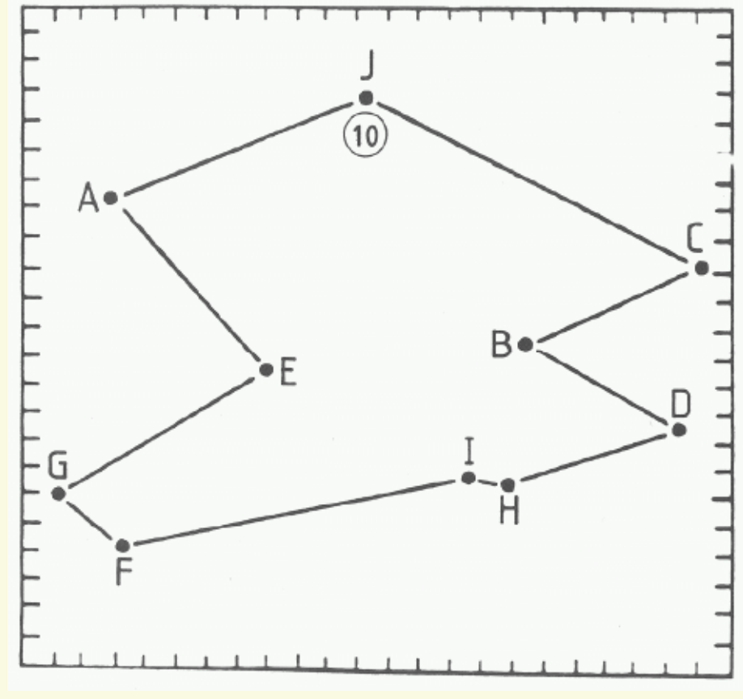
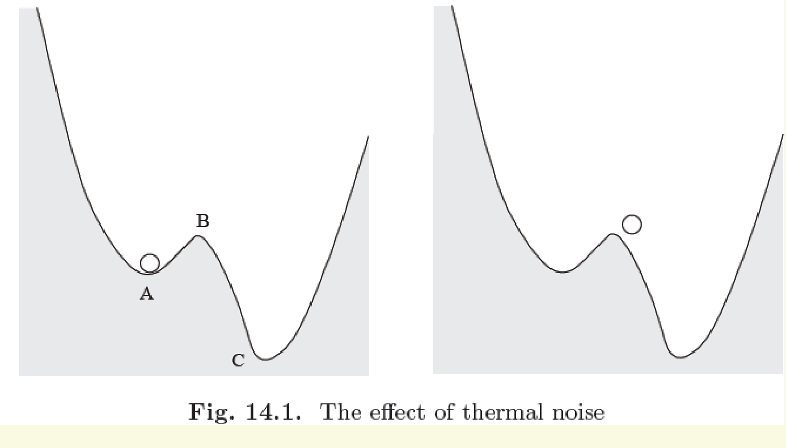

学习路线：让一张路线表自己“走向”低能量
旅行商要访问每座城市一次再回到起点。怎样把“不能重复、不能漏掉、路程尽量短”写进一个会随时间变化的网络？
本周把 Hopfield network（Hopfield 网络）从离散状态推进到连续时间：神经元的内部状态像电容电压一样逐渐变化，输出暂时可以处在 0 与 1 之间。我们先证明适当构造的能量沿运动下降，再反过来设计能量，让低能量状态表达一条较好的路线。这里的关键是建模与推导：网络并不理解“城市”，这些含义必须由我们放进变量、约束和连接之中。
- 解释内部状态、输出、泄漏、反馈与偏置怎样共同决定连续网络的变化。
- 逐步推导能量非增性，说清对称权重、单调激活与有限增益的作用。
- 把路线写成城市 × 位置矩阵，逐项计算约束惩罚与闭合路线长度。
- 从二次能量读出权重与偏置，检查循环索引、对角项和二重计数。
- 区分稳定、近二值、合法和最优，解释局部极小为何构成障碍。
阅读顺序是“够用的基础 → 连续动力学 → 能量证明 → TSP 编码 → 惩罚能量 → 网络构造 → 结果与局限”。正文的示范均直接展开；练习答案可以折叠。无需先读过其他周教材。窄屏上可在长公式、宽表格和图框内横向滚动，保留正常字号阅读。
主来源为 Lecture_slides_full semester.pdf，实际第 202–222 页，从 Continuous-time Hopfield Network 到 Local Minima。本文所有课件页码都从 PDF 第一页计数，不使用页脚编号。第 223 页及其后的算法不在本周展开。
“原资料内容”表示课件直接提供的模型或例图；“教学补充”表示为讲清它而补入的推导、基础或自设例题；“经核实的纠正”表示复算或追溯原始论文后需要更正或限定的表述。评级只反映本周学习依赖，不代表考试概率。
评级尺度：★★★★★ 5/5 核心基础；★★★★☆ 4/5 重要方法；★★★☆☆ 3/5 理解支撑；★★☆☆☆ 2/5 局部拓展；★☆☆☆☆ 1/5 背景补充。每块另给具体理由。
1 必要前置：从“下一步”转向“变化速度”
1.1 Energy and stability（能量与稳定性）
前置回顾／教学补充；与本周课件第 205、207 页衔接。辅助阅读：course_files_export/ASSPM-Lippmann1987.pdf，实际第 4–5 页的 Hopfield net 部分。
第 7 周的核心想法可以压缩成一句话：给整个网络状态分配一个数，称作 Energy function（能量函数）；设计更新规则，使状态一旦改变，这个数就不会增加。离散 Hopfield 模型的经典保证需要对称连接、零对角以及逐个神经元的异步更新等条件。这里回顾的是思路，不把那套更新条件直接移植到连续模型。
把状态想成山坡上的位置，能量是高度：下降告诉我们正在往低处走，却没有告诉我们走到的是整片山地最低点。Equilibrium（平衡点）指状态此刻没有变化；Stability（稳定性）问受到小扰动后会不会远离；Asymptotic stability（渐近稳定性）还要求附近状态最终回到该点。它们比“某次运行看起来停住”更严格。
本周的“能量”首先是用于证明和优化的标量函数，不必等于电路实际储存的焦耳数。只要给能量加一个与状态无关的常数，哪一点更低、梯度方向和最低点位置都不改变。
1.2 Derivative and differential equation（导数与微分方程）
前置补充；服务于课件第 202、204–205 页。
函数 表示时刻 的内部状态。导数 ，也写作 ，表示它此刻变化有多快。导数为正就上升，为负就下降；为零只说明此刻水平，不能单凭这一点判断附近的行为。若在足够短的时间 内变化速度近似不变，就有：
其中 是时间增量。这个近似把“速度”变成“短时间位移”，只是理解工具，并非任意大步长都可靠的仿真规则。Differential equation（微分方程）把变化速度写成当前状态的函数，例如 。给出初始状态 后，它规定一条随时间演化的轨迹。
设 ，初始值 ，没有输入。解为 。验算时对它求导，得到 ，符合原方程；在 时又确为 4。在 时，状态降到 。这解释了时间常数：经过一个 ，无驱动状态缩小到原来的 ，并非立即清零。
能量通常依赖许多输出 。Partial derivative（偏导数） 表示暂时固定其他输出，只改变第 个输出时能量的变化率。将每一条影响相加，就是本周证明要用的 Chain rule（链式法则）：
这里 是神经元数， 是激活函数的导数，。第一式把每个输出的贡献累加；第二式说内部状态先改变，再通过激活函数影响输出。
1.3 Quadratic energy and penalty（二次能量与惩罚项）
前置补充；对应课件第 211–218 页所需代数。
“希望某个数量等于目标”可以转成“偏差的平方尽量小”。例如总输出 希望等于 ，就加入 ，其中 控制违反目标的代价。偏差正负都被平方成非负数，满足目标时这一项为零。它是 Penalty method（惩罚法），即把约束违反变成目标中的成本。
但惩罚不是硬性禁止。如果违反约束使路程项大幅降低，而罚得太轻，总能量仍可能更小。必须分别检查“惩罚函数怎样表达规则”与“选定系数是否真的让合法解占优”。
二次能量包含两个变量的乘积，例如 。把所有输出排成列向量 ，连接排成矩阵 ，常用表达是：
上标 表示转置； 是固定偏置向量。能量是标量。若 对称， 的同一乘积在有序双重求和中出现两次：一次是 ，一次是 。前面的 正好抵消重复。
如果我们希望两输出同时为 1 时付出代价 ，就设 。网络能量对应项为 。负权重造成相互抑制，从而不鼓励同时开启。线性项 则对应偏置 ，鼓励第一个输出增大。
现在可以读懂“每个神经元的变化速度”。接下来先建立真实的连续状态，再证明它们为何共同下降。
2 Continuous-time Hopfield network（连续时间 Hopfield 网络）
2.1 State equation（状态方程）：泄漏、反馈与偏置
原资料：Lecture_slides_full semester.pdf，实际第 202 页；引入增益的激活见第 206 页。解释与算例为教学补充。
离散更新像按一下开关，连续网络则让内部状态不停积累并泄漏。为避免稍后“城市”和“位置”的下标混淆，这里先用 标记普通神经元。课件模型为：
| 符号与维数 | 含义 | 在方程中做什么 |
|---|---|---|
| Internal state（内部状态），每个分量可正可负 | 保存过去输入累积的影响 | |
| Output（输出）；由当前内部状态决定 | 送到其他神经元，也成为优化变量 | |
| 固定连接权重； 从 指向 | 汇集网络反馈 | |
| Bias / external input（偏置／外部输入） | 在这次优化中保持固定 | |
| ，正标量 | Time constant（时间常数） | 控制无驱动状态衰减的速度 |
| ，正标量 | Gain（增益） | 控制输入输出曲线的陡峭程度；第 202 页相当于 |
以上是归一化模型：本教材计算例中时间、电压与系数都采用一致的模型单位， 为无量纲。若保留物理时间且 已归一化， 有时间量纲， 与 的单位须使右边各项都是“内部状态／时间”；不能直接把这里的数值当作实际欧姆或安培。
逐项看： 是 Leak（泄漏），把内部状态拉向零； 是 Recurrent feedback（循环反馈），其他输出反过来改变自己； 是持续驱动。平衡并不是“每个输入都为零”，而是三部分相互抵消。
设 、、，、，另一个输出 ，偏置 。于是 。当前输出 ，导数 ，所以 。内部状态与输出都下降，但数值和变化速度并不相同。
这是固定权重的动力系统在求解一次问题，不是在用样本训练 。TSP 中改变城市距离会改变要构造的权重；在一次运行内部，输出变而权重保持不变。
2.2 Sigmoid（S 形激活）：连续值为什么有用？
原资料：主课件实际第 202、206、209、212 页；曲线与数值为教学补充。
Unipolar sigmoid（单极性 S 形函数）把任意实数输入压到 0 与 1 之间。“单极性”指输出范围不包含负值。它严格递增，且：
当内部状态很负时输出接近 0，很正时接近 1； 时始终是 。增益提高时曲线变陡，中心斜率为 。下图先看三条曲线都穿过中心，再看同一个小正输入如何在高增益下更接近 1。
| −0.1 | 0.4750 | 0.3775 | 0.0067 |
| 0 | 0.5000 | 0.5000 | 0.5000 |
| 0.1 | 0.5250 | 0.6225 | 0.9933 |
在 TSP 中，一个中间输出 0.4 只表示该神经元的连续激活程度；没有概率模型时，不应擅自称为“有 40% 的概率选这座城市”。最终若所有输出接近 0 或 1，可以尝试解码；但增益再高，有限输入的 sigmoid 也不会在数学上恰好达到 0 或 1，更不会自动保证矩阵合法。
2.3 Analog circuit（模拟电路）：方程里的变量从哪里来？
原资料：主课件实际第 203–204 页；变量区分与归一化说明为教学补充。外部核验：Hopfield (1984)，正文式 (5)–(9)。
第 203 页画出多神经元的电阻互连：放大器输出经过连接返回其他输入。反相放大器提供负向信号，所以负权重不能被简单理解为“负电阻”。第 204 页把其中一个节点展开：来自其他节点的支路电流在输入端相加，一部分通过电导泄漏，剩下部分给电容充电，使内部电压随时间变化。

用 表示电容，避免与稍后的 TSP 惩罚系数 混淆；用 表示外部电流，避免与城市下标 混淆。课件电路关系整理为：
是电压， 是电容（F）， 是总泄漏电导（S）， 是电流（A）， 具有电导的量纲；两边都是电流。第 204 页的直接输入支路写法是“支路电导 × 两端电压差”；展开后，输入部分与泄漏部分分开。为避免符号误解，记实际支路电导为 ，则总泄漏电导为 。这里 是局部电导，不是激活函数。若输入来自反相输出，信号部分可以带负号，但支路电导仍为正；所以一般带抑制连接时，G 不能直接算作所有带符号网络权重的代数和。
除以电容后，、、，就能认出上一节的方程。课件第 202 页采用共同 的简化形式。若各电容不相同，归一化后的 不一定仍对称，不能不加说明地套用同一形式的证明；应回到带电容的物理能量与对称连接条件。
第 204 页还给出了与电路匹配的能量：对称 下，
其中 是“由输出反求输入”的反函数，积分暂时可以理解为累计面积；下一节会解释它为什么必须存在。此 是用于稳定性分析的函数，不能仅因来自电路就认作电容储能。正电容和单调激活给出 。
电路直觉说明状态会逐渐变化，却没有保证整体行为稳定。下一步要让每条局部变化都服从同一个能量。
3 Lyapunov function（Lyapunov 函数）：为什么会往低处走？
3.1 完整能量及非增性的逐步证明
原资料：主课件实际第 205 页；下列补全了对称性、链式法则和求导步骤。外部交叉核验：Hopfield (1984)，正文第 3090 页、式 (7)–(10)。
Lyapunov function（Lyapunov 函数）在这里是沿系统轨迹非增的标量。假设 ， 固定，，所有激活函数可微且严格递增。对上一章的共同激活 ，完整能量为：
三项依次对应连接、泄漏和外部驱动。 是积分里的临时变量； 是反函数，不是 。例如 sigmoid 输出为 时，其内部输入就是 。所有求和都覆盖 个神经元， 只有一个值。连续模型的这份证明不要求对角权重为零，这与前述离散回顾不同。
第一步：连接项为何给出一个加权输入？
对 求偏导时，它既可能在乘积第一个位置，也可能在第二个位置：
最后一步用了 。若没有对称性，求导得到的是 对应的作用，未必等于实际网络反馈，因此这份证明会断开。
第二步：反函数积分恰好补上泄漏
积分上限是 ，所以它的导数是被积函数在上限的值：。再加上线性项的导数 ，得到：
这就是挑选该积分的原因：使能量对输出的偏导，恰好是内部状态变化速度的负数。
第三步：沿时间求导，观察每一项的符号
每个平方都非负，，再乘负号，所以每项都非正。只要至少一个 ，总和就严格小于零；所有状态速度都为零时等号成立。这里说的是能量的Non-increasing（非增），不是要求到达平衡后还继续下降。
若某时刻两神经元的激活导数是 0.2、0.1，内部速度是 0.3、−0.4，则 。第二个状态在减小，但其平方仍是正数；两者都使能量降低。不能把“某个状态增加”误当成“能量增加”。
还可以把同一关系写成 ：每个输出沿降低能量的方向移动，速度比例由该神经元的激活斜率决定。它不是一般意义上在所有坐标上采用相同速度的最速下降。
3.2 Equilibrium（平衡点）不自动等于好答案
原资料：主课件实际第 205、207 页。经核实的限定：不能把第 207 页的平衡点表述理解成“任意平衡点均为局部极小”；反例为独立代数核验的教学补充。
有限 sigmoid 输出在有界区间，权重与偏置有限，泄漏又抑制无限增长，因此该模型轨迹有界；完整能量也有下界。它不可能无限下降而没有下限。在标准光滑、有界条件下，非增性可用于说明轨迹趋近于平衡集合；若相关平衡点孤立等条件成立，可进一步得到单点收敛。仅写一句“有下界且下降”并不等于已经证明任意系统的整个状态都收敛到唯一点。
对本模型，有限增益下平衡点满足 ，即各偏导为零。但驻点可能是局部极小、局部极大或鞍点。实际希望找到的是能吸引附近轨迹的稳定局部极小，而不是任何一个驻点。
取单神经元 、、。在 时 ，所以 ，确是平衡点。但能量对 的二阶导数为 ，在 时为 −4，附近的形状是向下弯的山顶。稍微改变 ，局部动力学的斜率是 ，扰动会被放大。因此这个平衡点不稳定，也不是局部极小。
本例的 是标量自连接， 衡量一维曲率；负值可判定光滑驻点为严格局部极大。这个反例的作用是限制逻辑，不是要求把一维模型当作 TSP。
3.3 High-gain approximation（高增益近似）的条件与极限
原资料：主课件实际第 206–207 页；反函数推导、误差界及反例为教学补充。
从 出发，先得到 ，两边取自然对数并整理：
这里 是自然对数。积分可拆成 ；用导数回查可得：
下限 0 按极限解释，并约定 。记方括号为 ：它在两端是 0，在中点是 ，因此 。这既核对了符号，也给出完整能量与二次近似的关系：
当 、、、 固定， 时，积分修正趋零，才得到课件第 207 页的二次近似 。比较不同规模的网络时，不能忽略误差界中的 ；在 TSP 中它会变成 。
有限增益时，积分项在中间取负值，影响驻点位置；真实网络下降的是完整 ，而不是保证每一瞬间近似 都下降。能量值趋近也不自动保证梯度在边界附近同样接近，因为 在端点附近无界。
对于固定且非零的 ， 确实使输出趋向 0 或 1；但 时输出始终为 ，而网络中的 本身还会随参数变化。
教学反例：设 、、，则对任何有限正增益， 都是稳定平衡，因为动力学斜率为 。其二次能量 也在 取最小值。可见，负自连接能容许稳定的内部解；必须结合具体能量结构检查近二值性。
稳定性提供了“向低能量走”的机制。现在轮到建模者回答：怎样让“低能量”代表我们想要的路线？
4 Traveling Salesman Problem（旅行商问题）：先把路线变成状态
4.1 路线问题与组合规模
原资料：主课件实际第 208 页；计数推导和时间复算为经核实的补充／纠正。
Traveling Salesman Problem（旅行商问题，TSP）要求在给定城市与城市间距离后，找一条访问每座城市恰好一次、最后返回起点的闭合路线，并使总长度最小。回到起点是闭合条件，不算“又安排了一次起点访问”。本周采用Symmetric TSP（对称旅行商问题）：，且 。下文默认 ，城市互不相同， 为城市数。
先将 座城市排成一个顺序，有 种排列。闭合回路没有固定起点，同一环从任一城市出发都算相同路线，所以除以 。再假定正向与反向视为同一条无向路线，且距离对称，便可再除以 2：
这个式子不是所有 TSP 表述都能用。若方向不同具有不同意义，例如有向道路或 ，反向通常不能合并，固定起点后仍有 条。若只是数城市－位置矩阵，不合并旋转和反向，就有 个合法编码。这是三种不同的计数对象。
第 208 页的路线数量级正确，但将其转换为秒与年时丢失了约 4.4 的系数。逐步计算为：
为枚举耗时，这里按每年 365.25 天计算，约为 1401 亿年。课件的 秒可以粗略表示数量级，却不能再配上看似精确的年数作为同一算式结果。假设本身也只是每秒检查 条路线的理想化估算，并非某台机器的实测性能。
Hopfield 网络的动机是用并行相互作用寻找较好路线，而不是逐条枚举。它不因此拥有“多项式时间必定找到最优路线”的保证。
4.2 City-position encoding（城市－位置编码）
原资料：主课件实际第 209–212 页。符号统一：第 209 页以位置先、城市后写变量；本文按第 210 页图与第 212 页后续公式，固定采用城市先、位置后。
用一张 表表达候选路线：行是城市，列是访问位置。用 表示城市，用 表示访问位置。在一个最终的二值编码中：
每个单元格对应一个神经元，所以神经元数是 ，不是 。矩阵 包含所有输出，内部状态矩阵记为 。在运行期间 ；定义中的二值解释用于理想的路线端点与解码结果。
这不是 Adjacency matrix（邻接矩阵）： 不代表城市 连向“城市 ”。第二个下标是位置。城市间距离另存在 中，两张矩阵尺寸相同但意义不同。
该页矩阵从第 1 列到第 6 列，数值 1 分别出现在城市 1、4、6、3、5、2 的行。因此路线是 1 → 4 → 6 → 3 → 5 → 2 → 1。左侧箭头图表达同一闭合顺序。反过来，把第 个城市所在行的第 列设成 1，其余为 0，就重新得到原矩阵。
注意“城市 4 在第 2 个位置”写成 ，不能因为路线中数字 4 比数字 2 大就颠倒行列。
合法矩阵是 Permutation matrix（置换矩阵）：每行一个 1，每列一个 1，其余为 0。它能被按列唯一读成顺序。对于本周的完整图 TSP，任何这样的矩阵都表达一条闭合访问路线。
4.3 四城市的完整编码示范
教学补充：自设四城市例子，不是课件十城市实验；采用与课件第 210–213 页相同的模型。
令四座城市为 P、Q、R、S，对应城市编号 1、2、3、4；这样城市名不会与惩罚系数 混淆。位置取为 P=(0,0)、Q=(3,0)、R=(3,2)、S=(0,2)，长度采用任意一致单位。先用直角三角形求对角线，。距离矩阵为：
例如按外周走 P → Q → R → S → P。把四个“城市在位置”的决定写入矩阵：
| 城市 ＼ 位置 | 1 | 2 | 3 | 4 | 行和 |
|---|---|---|---|---|---|
| P | 1 | 0 | 0 | 0 | 1 |
| Q | 0 | 1 | 0 | 0 | 1 |
| R | 0 | 0 | 1 | 0 | 1 |
| S | 0 | 0 | 0 | 1 | 1 |
| 列和 | 1 | 1 | 1 | 1 | 总和 4 |
检查有四步：沿行看，每座城市恰好使用一次；沿列看，每个位置恰好放一个城市；统计总和恰好是 4；按顺序加上返程，路长是 。前面三步回答“是否合法”，最后一步才回答“有多长”。
换成 P → R → Q → S → P 时，置 1 的格子变为 。这仍是置换矩阵，但路长为 。合法路线可以有不同质量，合法性检验无法代替最短路比较。
现在有了表示路线的状态。接下来逐条把“想要什么”变成非负惩罚，再加入距离。
5 Penalty energy（惩罚能量）：让规则产生数值代价
5.1 一城一次、一位一城与总访问数
原资料：主课件实际第 211、213 页；证明与反例为教学补充。
先站在二值编码的角度，定义每行的选中数 ，每列的选中数 ，总数 。合法条件是所有 ，于是总数自动等于 。课件没有直接写成每行偏差平方，而是采用下面三个协作的项：
是同一城市重复出现的惩罚系数。固定一个城市 ，若它在两个不同位置 都开启，乘积就是 1。两种有序写法都被求和，因此一对冲突实际付出 。二值时也可写 ：0 个或 1 个选中都不受罚，2 个罚 ，3 个有三对冲突，罚 。
惩罚同一位置挤进两座不同城市。它同样只禁止“多于一个”，本身不处罚空位置；二值时 。
控制总数偏离 的代价，多一格或少一格都罚 。这一项只看总数，无法知道这些 1 分布在哪些城市或位置。注意 是本文的总输出记号，城市 S 则是四城市例子的名字，二者不同。
三个项为何能联合表达“恰好一次”？
在二值域，如果 ，每行每列至多一个 1；如果再有 ，总共有 个 1。把 个 1 放进 行且每行至多一个，就只能每行恰好一个；对列也一样。因此在正系数下，三项同时为零等价于一个合法置换矩阵。任何一项单独为零都不够。
如果已经强制所有行和、列和等于 1，总数条件确实冗余。但这里 只排斥成对冲突，全零矩阵也能让它们为零，因此总数项不能直接删除。
连续域中，不能用二值恒等式 随意化简。即使所有行和、列和都是 1，输出也可能都是 。这时并不是可直接解码的路线，成对惩罚通常仍为正。
5.2 Tour length（路线长度）：相邻位置如何找到城市？
原资料：主课件实际第 212–213 页；循环与双重计数解释为教学补充。
矩阵里没有直接存“这两座城市相连”，但相邻列上的 1 会告诉我们这一点。若 且 ，城市 后面是城市 ，应加上距离 。先写一个容易理解的单方向表达：
是长度，不是课件某些页用于能量的字母 。Cyclic index（循环索引）约定 、。因此位置 的下一站自动回到位置 1；漏掉这项，就错误地求成了开路径。
为使连接对称，课件使用前后邻居都计入的写法。对于 ，通过交换城市下标并平移位置，前向总和与后向总和相等，于是：
每个求和下标均从 1 到 。对合法路线来说，每条边在两端各被看见一次， 消除重复。这个等式在对称距离的连续矩阵上也成立，但只有矩阵合法时，数值才可解释成一条实际路线的总长；非法矩阵中的值只是一个代数项。
对 P → Q → R → S → P，单方向是 。课件写法按四个开启神经元分别求“前邻居 + 后邻居”：P 的贡献为 ，Q 为 ，R 为 ，S 为 。总和 20，再乘 得 10。位置 1 的前邻居确实在位置 4，而不是不存在的位置 0。
若距离不对称，前后两种方向的代价不再相同；本周这一对称写法不能直接用于有向 TSP，否则会改变优化目标。
5.3 完整的 TSP 二次目标与它的适用域
原资料：主课件实际第 213–214 页；统一以 标记 TSP 目标，避免与有限增益的完整 Lyapunov 能量混淆。
把距离赋予正系数 ，定义 。四项相加得到：
所有下标都在 1 到 内循环，只有写明不等号的城市或位置配对被排除。 均是模型参数。若 无量纲，距离以 km 给出，而 以任意能量单位给出，则 有能量单位， 有“能量／km”的单位， 才能和其他系数相加。实际计算也常先归一化距离。
在合法二值矩阵之间比较，三项惩罚都为零，，所以最小化 等价于寻找最短路线。在所有矩阵中搜索时，非法状态也参与竞争；系数太小可能让违法但“少走路”的状态占优。有限增益真实网络还包含反函数积分修正。建模顺序因此是：先定义二值路线的目标，再考虑连续放松与真实动力学。
也可以设计别的惩罚模型，但它们在连续域中不一定与课件模型相同。例如 会产生 与线性项。只有在二值域才可用 重写。本文保持课件的四项模型，不把另一个连续目标的权重与它拼在一起。
5.4 同一张四城市地图：合法与非法编码的能量账本
教学补充：沿用第 4.3 节四城市数据。为方便手算，取 ，这不是课件实验参数。
外周路线四行、四列各一个 1，总数为 4，所以 ，总能量为 10。下面故意制造不同错误，观察哪一项发现它。
令位置顺序为 P、Q、P、S，开启格为 。行和为 (2,1,0,1)，列和仍是 (1,1,1,1)，总数仍是 4。
P 行的有序冲突只有 和 ，因此 。各列没有冲突，所以 ；总数正确，所以 。距离代数项为 。于是 。
总数和每列正确仍不能替代“一城一次”。这条重复访问序列的距离项虽恰好等于 10，却不能称为合法 TSP 答案。
开启 。行和全为 1，列和为 (1,2,0,1)，总数为 4。现在同列冲突出在 Q 与 R，所以 。
用前向路程式，位置 1 → 2 产生 P–Q 与 P–R 两个乘积，贡献 ；2 → 3 与 3 → 4 都因第 3 列为空而贡献 0；4 → 1 贡献 2。因此 ，总能量 。
小于 10 的距离项不意味着发现捷径：它来自空列造成的缺边和同列造成的分叉，已经不对应一条完整路线。
保留 ，让位置 3 为空。没有行列冲突，所以 。总数为 3，。距离代数项仅剩 P–Q 与 S–P，，所以 。
若只把 改成 4，其余参数不变，则 ，反而低于合法外周路线的 10。这是“罚得太轻可能选非法解”的直接反例；不是说参数 20 已经保证任何实例都成功。
| 状态 | |||||
|---|---|---|---|---|---|
| P–Q–R–S（合法） | 0 | 0 | 0 | 10 | 10 |
| P–R–Q–S（合法） | 0 | 0 | 0 | 11.2111 | 11.2111 |
| P–Q–P–S（重复 P） | 20 | 0 | 0 | 10 | 30 |
| 第 2 列放 Q、R | 0 | 20 | 0 | 8.6056 | 28.6056 |
| P–Q–空–S | 0 | 0 | 10 | 5 | 15 |
| 每格都等于 1/4 | 30 | 30 | 0 | 8.6056 | 68.6056 |
最后一行展示连续状态的特殊性。每行、每列都有四个 ，和均为 1，总数也是 4，但没有一个明确被选中的城市。每行有 12 个有序异位乘积，各为 ，四行累计 3，故 ， 同理。距离项为 。因此“行列和正确”既不保证二值性，也不等于课件的冲突能量为零。
每个能量项已经能独立解释。下一章将同一个多项式改写成网络形式，所有权重的负号与偏置都应从这里推出来。
6 Network synthesis（网络构造）：从能量读出连接
6.1 Coefficient matching（系数对应）的准备
原资料：主课件实际第 214–216 页；展开、常数处理及维数说明为教学补充。
城市－位置矩阵有 个输出。可以把格子按行拉平成长度 的向量。为了仍能看见城市与位置含义，我们继续写 ，并用 表示从神经元 到 的连接。整个权重矩阵其实是 ，不是 。
用 表示数学模型中的归一化偏置，它对应前面的一维下标 ，也对应课件第 215 页写作 的输入量。将高增益二次网络能量写成：
所有有序格子对都参与求和，包含相同格子。目标是让 与 只差常数；两者这样才有相同偏导与极小点位置。我们先处理会同时产生二次项、线性项和常数的总数惩罚：
第一项的系数与 比较，给出对所有格子对的贡献 。第二项与 比较，给出：
正偏置普遍鼓励输出开启；全局的负连接抵消过量开启。二者合起来，才形成总数接近 的平衡。最后的 不依赖 ，可以从网络能量中略去，但在比较具体能量数值时要记得差值。
设 是扁平化的神经元编号，则正确恒等式是：
表示每个不同的无序配对只取一次； 的有序双重求和已经包含两种顺序。课件该页交叉项记为“不等”的求和又带因子 2，只有将那个求和理解为每对只取一次才成立。本文统一使用明确的有序求和，避免额外多乘 2；据此得到的全局连接仍是 。
6.2 Kronecker delta（Kronecker 指示符）与行列抑制
原资料：主课件实际第 217 页；以下为完整的系数推导示范。
Kronecker delta（Kronecker 指示符）是一个相等检测器：
它是无量纲的 0/1 数，不是距离。 选出同一城市； 选出不同位置。二者相乘就精确选择“同城、异位”的连接。
完整推导 A 项：从所有配对中筛出同一行
原来 只对一个城市下标 求和。为了与网络的四下标形式对应，先引入 ，用 强制 ；再用 排除 ：
当 时乘积前面的指示符是 0，自动排除；当 时保留同一行；当 又把同一个格子排除，所以正好返回原式。与网络能量比较：
为什么没有再多一个 2？因为等式两边都采用同一有序求和，并且都有 ，不能在比较系数时只给一边补重复计数。
仍取 ，考察同一城市 P 的位置 1 和位置 3。两条对称连接都为 −20。它们在网络能量中的贡献是 。两格同时为 1 时正好罚 20，与上一章重复 P 的计算完全相同。
B 项：只改变筛选条件
同一位置用 ，不同城市用 。这一次所选的是同列的两个格子，所以：
例如城市 P、Q 同在位置 1 时 ，在不同位置时本项为零。这种负连接让两个城市竞争一个访问位置。
6.3 相邻位置的距离连接与完整权重
原资料：主课件实际第 218 页；循环指示符与对称性检查为教学补充。
距离项只看位置 的前后邻居。于是用 选择它们；这些等号也按模 的循环位置解释，例如 。两城市越远，同时安排在相邻位置的代价越大，对应越强的负连接：
因 ，这里的 在本周条件下是冗余的；保留它便于对应课件。若实际问题使用非零自距离，则不能无条件声称冗余。把全部贡献相加：
在对称距离与循环相邻关系下，交换 与 不改变任一项，所以 。这不是附带美观的性质，而是前面能量证明需要的条件。假设 ，前后两个位置不同，避免两城市时前后位置重合带来的特殊计数。
| 另一端 | 满足哪些条件 | 各项之和 | 完整权重 |
|---|---|---|---|
| (P,2) | 同城、异位 | −A−C | −40 |
| (Q,1) | 异城、同位 | −B−C | −40 |
| (Q,2) | 相邻位置，距离 3 | −C−3D | −23 |
| (R,3) | 异城、非相邻位置 | −C | −20 |
| (S,4) | 循环相邻，距离 2 | −C−2D | −22 |
| (P,1) | 同一神经元 | −C | −20 |
每个偏置都是 。其中 (S,4) 一行专门检查首尾相连；(R,3) 一行说明距离项为零不代表整个连接为零，因为全局的 还在。
6.4 Self-connection（自连接）与二值化简的边界
原资料依据：主课件实际第 216、218 页；以下为连续／二值域的代数辨析。
完整公式给出 。原因是总数平方中确实包含 。如果照搬离散模型习惯，擅自将对角清零却保持偏置 不变，这个二次项就消失了，网络已经不再对应 。
在只考虑二值状态时，可以用 ，把对角二次项移进线性项：若设置零对角，偏置须改成 ，才在二值端点有相同能量（仍只差原常数）。然而当 时，，二者在连续域的梯度不同。本周保持连续模型的精确多项式对应，保留 的对角项。
由此得到可核对的身份关系：
例如四城市外周路线的 ，而由上述权重和偏置计算的 。能量为负没有问题；真正有意义的是相对高低和变化方向。
6.5 从连接返回 Dynamics（动力学），再解码
由主课件实际第 202、213–218 页联合推导；流程图、数值检查和解码步骤为教学补充。
把完整权重代回普通神经元方程。A 项只留下同一行的其他位置，B 项只留下同一列的其他城市， 与偏置合成总数偏差，距离项只留下前后位置：
这里 与 都是 矩阵，。所有被减去的竞争项都在提醒当前格子：同城已放在别处、同位已有其他城、全体开启过多，或邻居距离过远，都会压低当前内部状态。如果总数不足，，便普遍鼓励输出增加。
对有限增益，与这份动力学真正匹配的能量可选为：
它和前面的完整 只差常数 ，导数相同。固定对称权重、固定参数且有限正增益时，。不能用“我们希望最小化 ”替代“实际下降的是 ”这一步区分。
读图时沿箭头走：问题先变成变量含义；规则变成能量；比较系数确定权重与偏置；状态方程产生连续轨迹；最后才检查并解码。这是由能量设计动力学，再把动力学结果解释为问题答案，不是网络直接读懂城市地图。
一个可操作的解码与检查顺序
先检查内部速度是否已足够小，而不只看输出变化。sigmoid 饱和时 很小，即使 仍在变化， 也可能看起来几乎不动。然后检查各输出是否接近 0 或 1，形成候选二值矩阵；例如教学中可用阈值 0.5 读数，但阈值是后处理选择，不是合法性定理。
再检查候选矩阵每行、每列是否恰好一个 1，总数是否为 。全部通过才按列读取城市、补上首尾边并计算实际长度。若某列取最大值后出现城市重复，必须报告非法；逐列取最大值不能自动维持每城一次，也不能声称是在复现网络原本找到的合法路线。
微分方程的非增性属于连续模型。用第 1 章的短步近似作数值积分时，过大的步长可能使计算出的能量上升或振荡；这不等于推翻解析证明。应监测完整 、减小步长核对，并区分积分误差与模型的局部极小。此处是必要实现提示，不额外引入求解算法。
模型至此构造完成。还需要读懂参数和实验图能说明什么，才能评价一次运行，而不是把所有“停住”都叫成功。
7 Parameter selection（参数选择）与十城市结果
7.1 参数控制的是不同目标之间的权衡
原资料：主课件实际第 219 页。外部核验：Hopfield & Tank (1985)，实际第 7 页（刊页 147），Section IV。
课件给出的实例设置为：
这些数值是课件所列参数组。A、B 加大，行列冲突相对更昂贵；C 加大，总数偏离更昂贵；D 加大，距离差的影响更强； 加大，使激活更陡并减小积分修正。各参数不能脱离城市数量、距离尺度、初始状态与积分设置独立评价。参数并非越大越好，也不能从这一页推出普适最优设置。
例如把坐标长度全部扩大 100 倍而保持其余参数，距离项也扩大 100 倍，约束相对就弱了。要保持原目标的相同比例，可以相应把 D 除以 100。这是量纲和相对权重的问题，不是网络忽然“忘记”约束。
课件将这组数值归于 Tank 与 Hopfield；1985 年原论文 Section IV 列出的实验点却为 ，并用可调目标参数 处理十城市实例的偏置。该处激活采用 。
代数上它等于 logistic ，所以若输入尺度不变，对应 。这不能仅靠“tanh 与 sigmoid 是同类函数”就变成课件的 50。两来源的缩放或出处关系没有得到确认，本文不将二者拼成一个已复现实验；本周推导始终使用课件的总数目标 N，也不把原论文的可调偏置参数偷换进来。
外部核验的用途是限定参数出处，而不是把新的变体纳入本周主模型。课件的结构化推导仍可独立验证；这组数值本身是否适合一个给定实例，要由明确设置下的实际运行检验。
7.2 Ten-city example（十城市示例）：从输出图读到路线图
原资料：主课件实际第 220–221 页；以下保留原图局部，图外文字为教学读图说明。
十城市需要 100 个神经元，理想合法端点只有 10 个开启。先看第 220 页左图：行是城市 A–J，列是访问位置 1–10，格子大小展示输出强弱。不要把“任何可见方块”都立即当作 1；很多位置仍显示多个不同大小的方块。这种连续激活图承载的是输出强度，不能直接等同于已经完成二值解码的置换矩阵。

例如 B、C、D 行在第 7–9 列附近仍有可见输出；J 行在第 10 列的方块很大。它帮助我们看到“输出正偏向某些位置”，却没有给出每格的精确数值、二值阈值或时间标签。右侧是城市的空间位置，坐标刻度没有足以逐点复算的数值表。因此不能从这张截图编造输出精度、路线长度或收敛耗时。
再看第 221 页。它给出了课件标记为 Optimal Route 的连接图。可以从 A 开始沿线读成：

每座城市出现一次，最后闭合；反向读同一环是等价的。若按这个起点编码，则位置 1–10 依次对应 A、E、G、F、I、H、D、B、C、J。这个顺序来自最终路线图，不能以此倒推第 220 页所有连续输出已经是相应的二值矩阵。
“Optimal Route”是课件对该示例的标签。原资料没有给出可复算的完整坐标及全部候选距离，本教材可以检查图中的访问与闭合关系，但不能独立给出该图最优性的数值证明，也不冒称已经重跑十城市实验。
7.3 如何读“约 50%”与 181,440 条路线
原资料：主课件实际第 219 页；经核实的限定：Hopfield & Tank (1985)，实际第 8 页（刊页 148）、Fig. 5a 附近文字。
路线数可以精确复算：。这是十个不同城市、闭合、旋转与反向均合并的路线数；合法矩阵数则是 ，不能拿两者直接互换。
课件将结果概括为大约 50% 的情况下找到最优路线。原论文更具体地说：对该十城市实例的 20 次随机初态运行中，16 次得到合法路线，约 50% 的试验得到两条最短路线之一。这句话不能自动收窄成“恰有 50% 命中唯一全局最短”，也不能推广为任意地图的成功概率。
一次运行的评价应顺次报告：有没有达到数值上稳定的状态；输出能否可靠二值化；二值矩阵是否合法；合法路线有多长；有没有独立基准支持全局最优。如果前一步失败，就不能用一个更小的“距离项”冒充后一步成功。
即使数值积分正确、参数适当、结果合法，仍可能落到较长的稳定路线。最后一章解释这个障碍来自哪里。
8 Local minima（局部极小）：下降为什么还会被困住？
8.1 Energy landscape（能量景观）与障碍
原资料：主课件实际第 222 页 Local Minima；高维解释与命题辨析为教学补充。
Local minimum（局部极小）是附近足够小范围内没有更低值的点；Global minimum（全局极小）要求在整个允许域内都没有更低值。一个低谷可以在自己的附近最低，却比另一个低谷更高。对于 TSP，还必须说明是在连续矩阵域、二值域，还是合法路线集合中作比较；这些允许域不同。

看左图：A 是较浅的谷底，B 是它与右侧谷地之间的山脊，C 是图中更深的谷底。如果状态已经在 A，要沿图中这条路径到 C，就得先升到 B。一个严格只降低能量的系统不会主动完成这个上坡段。右图用扰动后的球示意越过障碍的可能性，图注称为 thermal noise（热噪声）的效果。
图没有数值坐标或能垒高度，只能用于解释机制。真实 TSP 状态有 个输出维度，这张二维图是直觉示意，不能证明某两个实际解之间所有高维路径都具有图中同样的障碍，也不能据此计算逃逸概率。
“稳定收敛”“满足路线约束”“全局最优”回答的是三个不同问题：
| 命题 | 所需证据 | 不能由它推出什么 |
|---|---|---|
| 稳定收敛 | 合适的动力学条件与极限／扰动分析；数值运行还需残差检查 | 输出不一定近二值，矩阵不一定合法 |
| 约束满足 | 候选二值矩阵每行每列恰好一个 1 | 路线不一定最短；它也可以是人为构造的，而非网络收敛所得 |
| 全局最优路线 | 在合法路线集合中具有最小长度，有独立比较或证明支持 | 不能仅靠能量不再下降、图上无交叉或一次成功运行来断言 |
还有一个细节：连续模型的能量局部极小，不自动等于“对所有城市交换操作都不能改善”的离散局部最优，因为它们的邻域不同。将一个稳定状态阈值化后，得到的路线及其离散改动必须另行评价。
初始状态不同会从不同位置开始下降，因此可能落入不同的吸引区域。即使保持同一张地图、同一组参数，稳定结果也可能不同。只重复“继续下降”不能保证从已经到达的谷底爬出去。
到这里应留下的问题是：能否允许受控扰动或偶尔的上坡，帮助状态离开局部低谷？这就是下一周随机优化的动机。本周只理解障碍，不展开其接受规则、概率模型或后续网络算法。
9 练习：先自己判断，再对照完整解析
以下均为教学补充，重要性沿用对应知识块。先做 1–6 检查主干，再用 7–9 检查模型边界。所有所需概念都已在正文解释。
设 、、其他神经元合计反馈为 −0.3，偏置为 0.5，增益 。求此刻 。输出等于 0.5 是否意味着网络已静止？
提示与完整解析
先算内部变化，再通过激活导数传给输出。，。中心导数为 ，所以 。中心值只是当前输入为零，不表示总驱动为零；网络此刻仍在变化。
某人写：“由于 ，网络必定找到全局最优。”指出推理中必须补的模型条件，以及即使条件成立仍越过了哪一步。
完整解析
首先需要与能量一致的状态方程、对称固定权重、固定偏置、正时间常数以及可微单调递增激活。有限正增益 sigmoid 满足激活条件。还需有界性等条件才能讨论长期收敛，不能只凭导数符号断言唯一极限。即使确实到达稳定局部极小，也只排除了附近的下降方向，未比较全部可行路线；更未自动证明输出二值且满足约束。因此全局最优不能推出。
四城市仍取正文的矩形，路线改为 Q → S → P → R → Q。写出置 1 的格子，检查合法性，并求路长。
提示与完整解析
格子为 ，其余为 0。每行每列各一次，总数为 4，所以合法。按位置相邻并加返程，。它是正文交叉路线的循环移位，所以长度相同；格子不同不表示一定是新的无向闭合路线。
四城市矩阵每格都是 1/4。有人说：“每行与每列和都为 1，总数为 4，所以是合法路线，惩罚全为零。”分别指出两个错误，并重算 。
完整解析
第一，合法解码要求是二值置换矩阵；每格 1/4 没有选定唯一城市。第二，课件的 A、B 项是异格乘积，不是简单行列和偏差平方，不能只看行列和。固定一行，有 4×3=12 个有序异位配对，各乘积为 1/16，四行合计 3。因此 。总数项确实为零，但不能替代另外两项。
四城市例中计算 与 ，再说明为何交换两端不会改变它们。
完整解析
Q 与 S 不同城，位置也不同，所以 A、B 项均为零。位置 2 与 3 相邻，距离为 ，故第一条权重为 。位置 2 与 4 不相邻，第二条只剩 。距离对称且循环相邻关系双向成立，交换两端后相等／不等条件不变，因此权重对称。
常见错误是因 Q、S 空间上较远而给位置 2 与 4 也加距离惩罚。距离项是否出现由“访问位置相邻”决定，并非由地图上是否接近决定。
仍比较外周合法路线与 P–Q–空–S，保持 D>0，但让 C 可变。什么条件下，这个非法编码的能量比外周路线低？
完整解析
合法外周能量为 ；非法编码无行列冲突，少一个开启格，能量是 。因此 ，即 时非法状态更低；等于时二者打平，大于时只说明这个特定非法状态比外周更高。它不是对所有非法编码、更不是对所有城市地图的充分参数定理。
5 城市时，合法城市－位置矩阵、固定起点的有向闭合顺序、忽略方向的对称闭合路线各有多少？
完整解析
合法矩阵是城市的排列，共 个。固定起点后剩 4 个城市排列，共 个有向顺序。对称且反向视为相同，再除以 2，得到 12 条无向闭合路线。一条这样的路线有 5 个起点选择和 2 个方向选择，对应 10 个矩阵， 相互核对。
10 城市网络采用 。完整能量与二次近似的积分修正绝对值最多多少？这个界能保证阈值化后得到最优路线吗？
完整解析
神经元数是 ，所以界是 ，单位与归一化能量一致。若误用 n=10，会小算十倍。这个界仅约束同一点上两个能量函数的值差；它不直接约束解码合法性，也不保证极小点不移动或达到全局最优。TSP 能量与网络二次能量之间的常数差必须先对齐，才能使用这个修正界。
“能量曲线已经平坦。逐列选最大输出后，城市 P 出现了两次，但总共仍有 N 个选择，而且距离数值低于已知最优路线，所以网络成功改进了最优解。”应如何纠正？
完整解析
能量平坦还要结合内部状态残差与数值误差判断；逐列选最大只能保证每列有一个选择，不能保证每城一次。P 重复意味着另有城市被漏掉，候选矩阵非法。其距离不能与合法最优路线直接比较，更不能称为改进最优解。正确报告是“得到一个需检验稳定性的连续状态；当前解码未满足 TSP 约束；该数值不构成有效路线质量证据”。
完成后尝试不用公式背诵解释整条链：为什么选城市－位置编码，为什么需要三项约束，为什么距离只连相邻列，为什么这些连接是负的，以及为什么能量下降仍不足以宣称成功。能讲通这些因果关系，才表示掌握了本周的建模方法。
10 来源索引、覆盖与资料限制
目录已递归盘点，包括隐藏元数据。主课件本周 21 页均结合文字提取与渲染图阅读；公式、六城市例子、十城市图与局部极小图均做了视觉核对。其他文件按实际内容判断用途，未因文件名含 “Tutorial” 就推定它对应本周。
| 文件与范围 | 原资料内容 | 教材位置 |
|---|---|---|
| Lecture_slides_full semester.pdf，202–204 | 状态方程、sigmoid、多节点及单节点电路、变量与物理能量 | 第 2 章 |
| 同文件，205–207 | Lyapunov 导数、反函数积分、高增益近似、优化解释 | 第 3 章 |
| 同文件，208–210 | TSP 规模、N² 神经元、六城市图与位置矩阵 | 第 4 章 |
| 同文件，211–213 | 置换约束、闭合距离、四项能量 | 第 5 章 |
| 同文件，214–218 | 双下标、偏置、C/A/B/D 权重与 delta 记号 | 第 6 章 |
| 同文件，219–221 | 参数、十城市输出图与路线图、实验说法 | 第 7 章 |
| 同文件，222 | A/B/C 低谷障碍图与扰动动机 | 第 8 章 |
| 相对文件路径 | 内容核查与处理 |
|---|---|
| course_files_export/ASSPM-Lippmann1987.pdf | 19 页神经网络综述；实际第 4–5 页 Hopfield 部分已读并查看原图，仅用于离散网络、对称连接与连续响应的简短背景，不扩展联想记忆容量。 |
| course_files_export/CS5486-2026.pdf | 2 页课程说明；已读，确认一般课程背景，无本周独有公式或练习，不作为技术结论来源。 |
| course_files_export/CS-Broomhead-Lowe1988.pdf | 35 页关于函数插值与 adaptive networks 的论文；根据摘要、章节及全文主题筛查确认以 RBF／插值为主，本周不采用。 |
| course_files_export/Nature1986.pdf | 4 页期刊扫描，含 Learning representations by back-propagating errors 及邻接文章片段；与本周连续 Hopfield/TSP 推导无直接对应，不采用。 |
| course_files_export/TLU.pdf | 21 页 Threshold Logic Units 章节；阈值逻辑与感知机背景，本周无需另引，未作为本周连续模型的证明。 |
| course_files_export/Tutorials/Tutorial 1.pdf | 39 页智能系统历史；实际第 17–20 页提到 Hopfield 与 TSP 应用，已查看，仅作范围筛查；无本周独立推导练习，不重复充当证据。 |
| course_files_export/Tutorials/Tutorial 2- M-P neuron.pdf | 36 页 M-P 神经元与逻辑运算；文本及代表页核对后确认不属于本周，不采用。 |
| course_files_export/Tutorials/Perceptron_Adaline.pdf | 18 页 Perceptron／Adaline；文本层较少，已查看全部页面缩略渲染以确认内容，本周不采用。 |
| course_files_export/Tutorials/Tutorial 7 - SVM and LS-SVM_1.pdf | 21 页 SVM、LS-SVM 与相关练习；按内容而非编号排除，不视作第 8 周配套练习。 |
排除的派生／管理文件：CS5486-12周教材生成提示词.txt；盘点时已有的 CS5486-Week01、Week02、Week03、Week04、Week05-学习教材.html；根目录和 course_files_export 下的 .DS_Store；空的 .writer.lock。它们均不作为独立事实来源。临时提取、渲染和复算文件也不作为新证据。没有发现本周课堂转录或录音，故没有引用教师口头强调或推断考试命中率。
必要外部核验，限于原始论文
Hopfield (1984)，Neurons with graded response have collective computational properties like those of two-state neurons，PNAS 81:3088–3092，DOI 10.1073/pnas.81.10.3088。核对了电路、能量和高增益关系；该 PDF 含一个封面页，重点为实际第 3–5 页，区别于本课程 PDF 页序。
Hopfield & Tank (1985)，“Neural” Computation of Decisions in Optimization Problems，Biological Cybernetics 52:141–152，DOI 10.1007/BF00339943。重点核对实际第 6–8 页、式 (8)–(12) 与 Section IV，用于辨清参数归属和十城市结果的统计含义；未将论文其他主题纳入本周教材。
已经纠正的地方与仍然保留的限制
- 实际第 208 页的耗时已按路线数完整复算，明确年换算约定；计数只在指定对称与等价条件下使用。
- 实际第 216 页交叉项按明确的有序／无序求和分别重写；保留连续模型的对角二次项。
- 实际第 207 页的“平衡点是局部极小”补充了稳定性限定，并用可直接验证的反例说明不能泛化。
- 实际第 219 页参数与 1985 年原论文实验点不同，未确认两者之间的具体来源或缩放关系；分别标注，不替原作者猜测。约 50% 的结果按原论文所述试验与“两条最短之一”解释。
- 实际第 220–221 页缺少完整数值输出、城市坐标、初态、步长与停止条件；本教材做图意解读，不声称复现实验或独立证明图中最优性。
四城市数值、二次能量与权重的恒等关系，以及连续梯度对应均已独立复算。自绘图和全部练习明确为教学补充。原始资料与其他周教材未被修改。